Para más información sobre la obra "Como Agua Para Chocolate" clic Aquí
Para más información sobre la obra "Como Agua Para Chocolate" clic Aquí |
En este capitulo, una pandilla dirigida por quien habia raptado a Gertudris trato de asaltar el Rancho de mamá Elena.
Al encontrarse sola, motivo a la mudanza de Rosaura y Pedro, mamá Elena esconde a Tita en un sotano con Chencha la sirvienta, y mamá Elena sale a
encarar a los rebeldes, con sus empleados Rosalío y Guadalupe, y les dejo muy claro que se podia llevar todo lo que encontraran, menos lo que había
en la casa, les prohibio entrar a la casa a los rebeldes, para desconsuelo de Tita, quien en ese momento anhelaba que la hubiesen matado.
Tita era la unica hija que podia ver a su madre desnuda, Tita la bañaba, le planchaba su ropa, la peinaba, ese dia había realizado sus tareas muy mal.Cuando
ya se sentia un poco mejor, Tita y su mami Elena estaban enrrollando los chorizos cuando Chencha llorando da la noticia del fallecimiento del hijo
de Rosaura y Pedro, hecho que desvasto a Tita. Su mamá le prohibe hablar y llorar y la manda a que continue enrrollando los chorizos, pero Tita se niega,
y la culpa por la muerte de Roberto su sobrino, lo que provocó que su madre le rompiese la nariz al golpearla con una cuchara de madera.
Tita huyé hacia el palomar y su madre ordena retirar la escalara para que no pudiera bajar, a la mañana siguiente Chencha va a verla y a intentar bajarla pero Tita no le constesta ni le hace caso a lo que Chencha le decía, entonces esta le dice a mamá Elena que Tita esta loca, lo que provoca que mamá Elena mande a llamar al Doctor Brown, para que la materia en un manicomio,ya que mama Elena decía que en su casa no hay lugar para dementes. Antes de que se fueran, Chencha le pone la manta que Tita tejía, y Tita se aferra con mucha
fuerza a la manta y esta era tan larga que la arrastraba por todo el camino.
Problemáticas:
1. Rosaura, Pedro y el niño se van ya que Mamá Elena sospechaba que habia pasado algo entre Tita y Pedro el dia de canícula:
Temerosa de que su madre sospechara algo, Tita regresó rápidamente y pasó una noche
de tortura aguantando las ganas de orinar acompañada de otra sensación parecida. Pero de
nada sirvió su sacrificio: al día siguiente Mamá Elena, que por un tiempo parecía haber
cambiado de opinión en cuanto a que Pedro y Rosaura se fueran a vivir a San Antonio,
Texas, aceleró la partida y en tres días más logró que se fueran del rancho.
2.Los reveldes llegan a saquear el Rancho de Mamá Elena, pero ella siempre firme no los deja entrar a la casa y el General de los rebeldes era quien se llevo a Gertudris y Mamá Elena nunca lo supo:-Nadie va a entrar a esta casa, vean qué más pueden encontrar aquí y vámonos.
Lo que descubrieron fue el gran palomar que formaba todo el techo de dos aguas de la
enorme casa. Para llegar a él se tenía que trepar una escalera de siete metros de altura.
Subieron tres rebeldes y se quedaron pasmados un buen rato antes de poder moverse.
Imponían el tamaño, la obscuridad y el canturreo de las palomas ahí reunidas que entraban
y saltan por pequeñas ventanas laterales. Cerraron la puerta y las ventanas para que
ninguna pudiera escapar y se dedicaron a atrapar pichones y palomas.
Juntaron tal cantidad que pudieron alimentar a todo el batallón por una semana. Antes de
retirarse, el capitán recorrió a caballo el patio trasero, inhaló profundamente el indeleble olor
a rosas que aún permanecía en ese lugar. Cerró los ojos y así permaneció un buen rato
3.Tita por la partida de su sobrino y Pedro, se siente vacia y desconsertada y no realizaba correctamente sus deberes:
En opinión de Mamá Elena, con el baño pasaba lo mismo que con la comida:por más que
Tita se esforzaba, siempre cometía infinidad de errores. O la camisa tenía una arruguita o no
estaba suficientemente caliente el agua o la raya de la trenza estaba chueca, en fin, parecía
que la única virtud de Mamá Elena era la de encontrar defectos. Pero nunca encontró tantos
como ese día. Y es que Tita verdaderamente había descuidado todos los detalles de la
ceremonia. El agua estaba tan caliente que Mamá Elena se quemó los pies al entrar, había
olvidado el shishi para el lavado del pelo, había quemado el fondo y la camiseta, había
abierto la puerta demasiado, en fin, que ahora sí se había ganado a pulso el que Mamá Elena
la reprendiera y la expulsara del cuarto de baño
El Rancho de Mamá Elena:
La cocina. En la cocina que es donde pasa Tita mayor tiempo, se sabe que hay una mesa y que hay dos puertas, una de ellas lleva hacia el patio trasero donde se encuentra un huerto, y la otra que lleva hacia un pasillo. Esto lo podemos leer en los siguientes fragmentos de capítulos anteriores:
Capítulo I: Tita arribó a este mundo prematuramente, sobre la mesa de la cocina, entre los olores de una sopa de fideos que estaba cocinando, los del tomillo, el laurel, el cilantro, el de la leche hervida, el de los ajos y, por supuesto, el de la cebolla.
Capítulo I: Ese gigantesco mundo que empezaba de la puerta de la cocina hacia el interior de la casa, porque el que colindaba con la puerta trasera de la cocina y que daba al patio, a la huerta, a la hortaliza, sí le pertenecía por completo, lo dominaba.
Capítulo II:Y diciendo esto, Tita salió rápidamente de la cocina, por la otra puerta, hacia la sala, donde Chencha y Gertrudis bordaban la sábana nupcial.
Patio. Donde se celebran las bodas y fiestas. En la parte trasera hay un hurto, y una especie de granja, con animales como gallinas.
Puedes ver un resumen general sobra la obra "Como Agua Para Chocolate" en el siguiente vídeo.
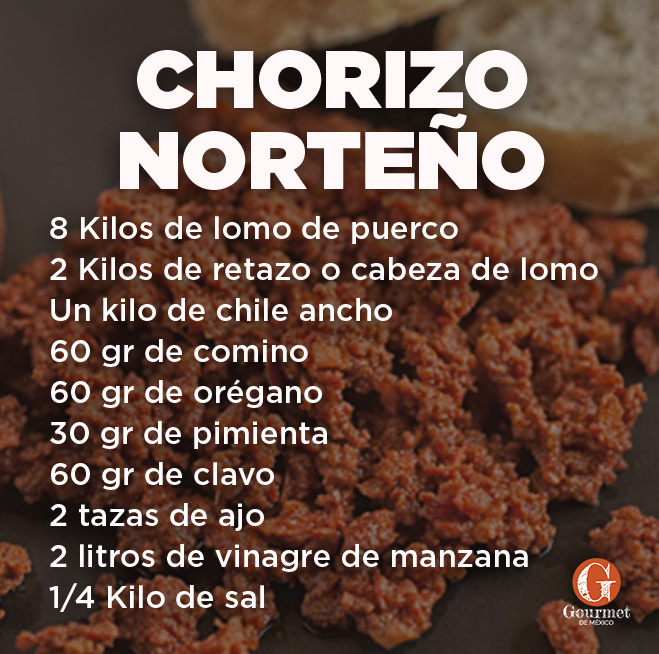Imágenes de chorizo norteño.
Valentía. Podemos notar este valor cuando Tita se enfrenta a su madre y le dice que por culpa de ella su sobrino se muere.
Vemos la valentia de Tita ya que nunca le habia levantado la voz ya que Mamá Elena era una persona de caracter muy fuerte
y por ese motivo le tenian un poco de miedo.
Bondad. Podemos ver este valor cuando Tita salva al unico pajarito que queda vivo, lo cuida, le da de comer y lo mantiene a salvo unos dias, hasta que muere el pajarito.
Paciencia. Podemos ver en el capitulo la gran paciencia que tiene Tita hacia su madre, por como Mamá Elena la trataba o como le decia las cosas de una manera muy dura que hacian que Tita se sintiera mal. Pero Tita no le falto nunca el respeto a su madre.
Amor. El amor es uno de los valores que mas podemos ver en Tita, ya que ella le daba un gran amor a todos,
amo mucho a su sobrino aun siendo hijo del hombre que amaba y de su hermana.
 Si deseas ver la película de "Como Agua Para Chocolate" haz clic Aquí |
Imagen acerca el capítulo nº 5
| 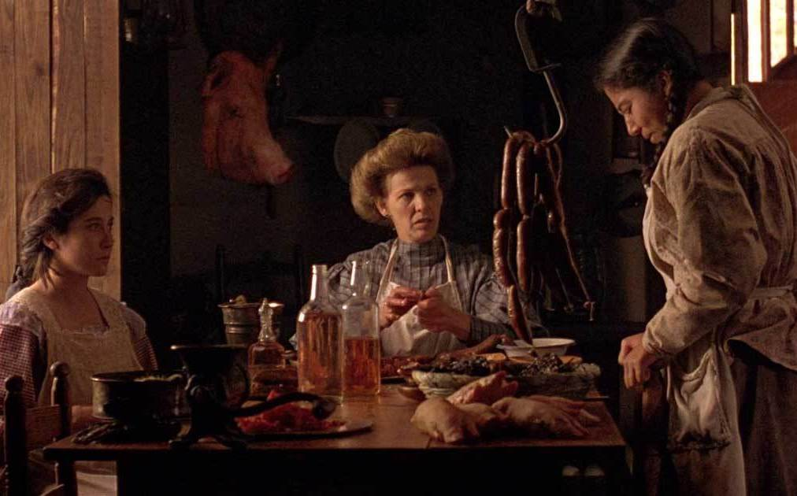 |
| 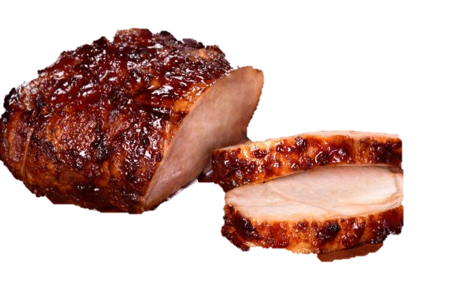 Lomo De Puerco |
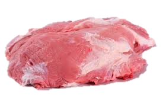 Cabeza De Lomo |
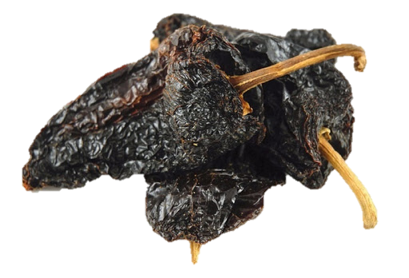 Chile Ancho |
| 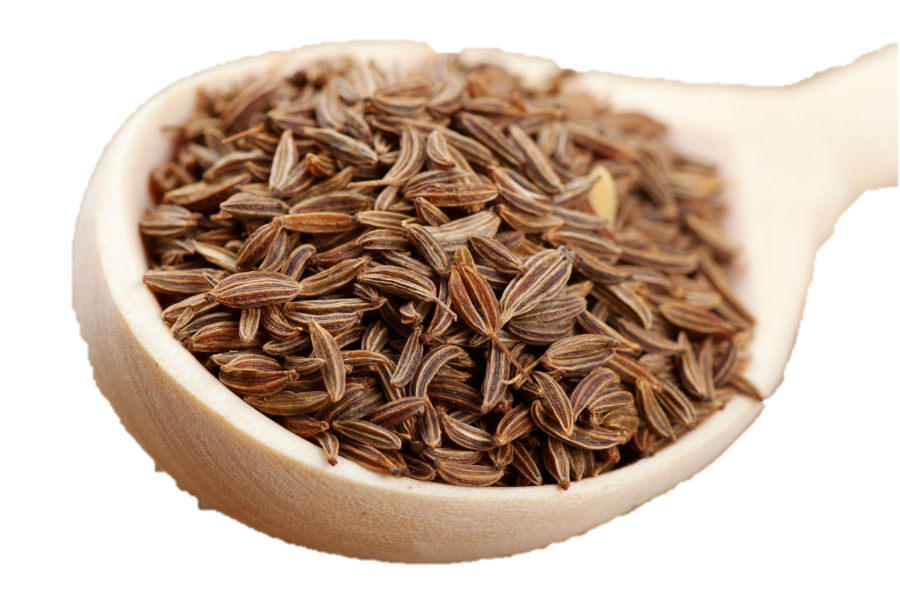 Cominos |
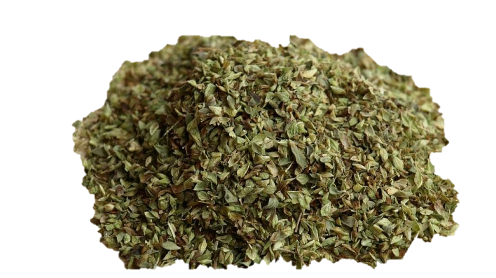 Orégano |
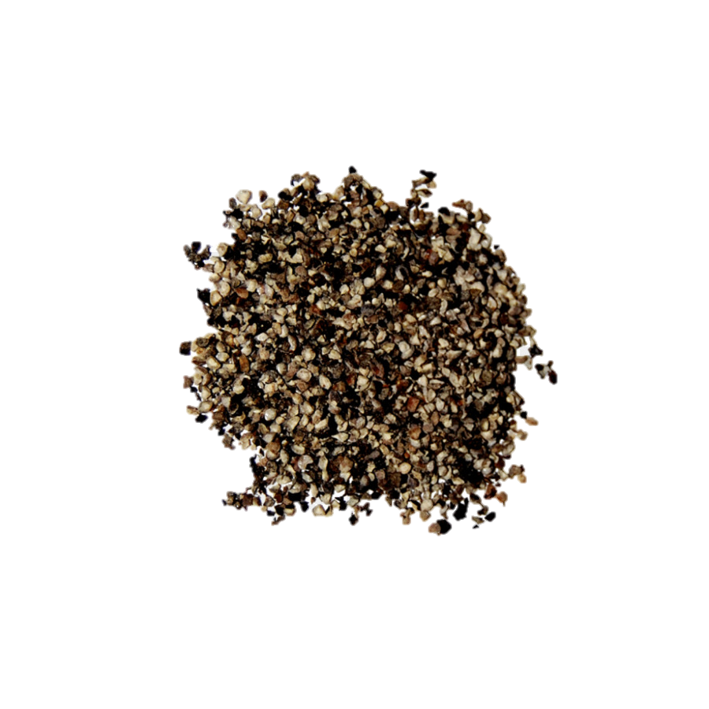 Pimienta |
| 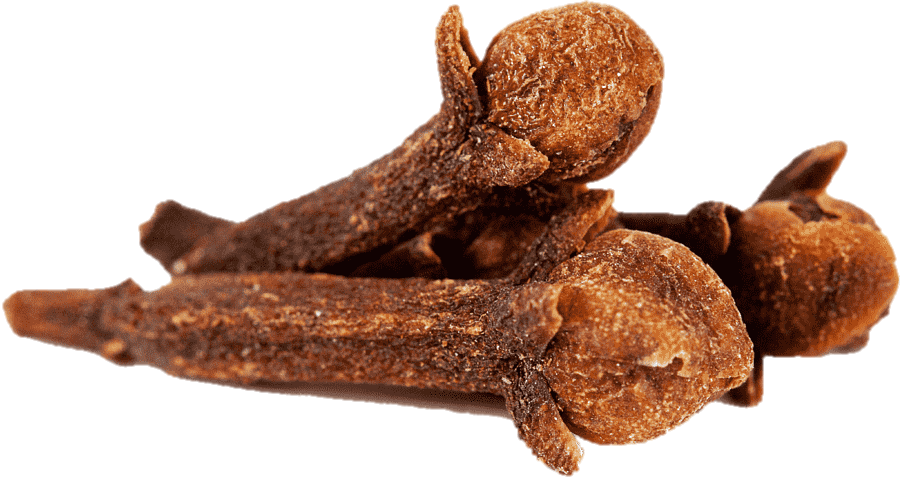 Clavo |
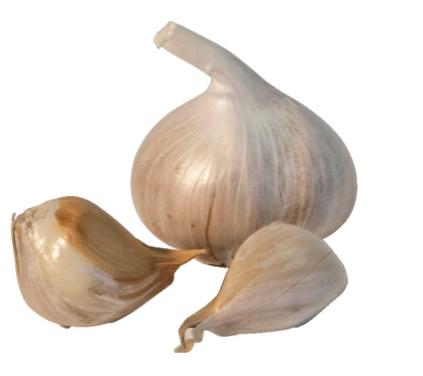 Ajos |
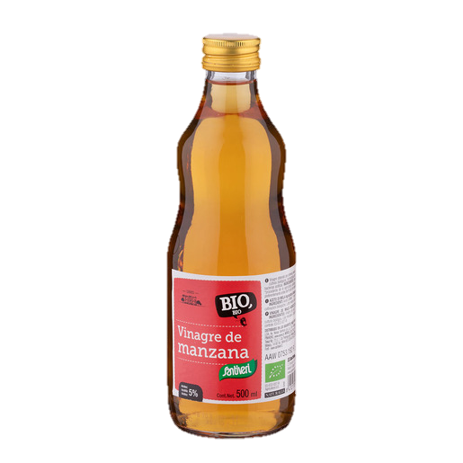 Vinagre de Manzana |
Sal |